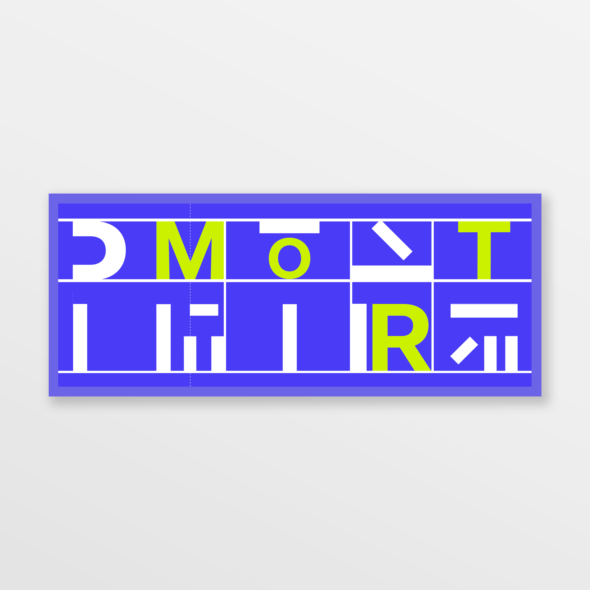

client
Nederlands Dans Theater
role
Graphic Designer
duration
± two weeks
tools
Adobe Photoshop + Adobe Illustrator
La Petite Mort subverts expectations of semantic, relating to its literal interpretation in language, and typographic meaning through dynamic Figure-Ground relationships and the use of color. The subversion of expectations amplifies typographic elements within the composition and engages the viewers.

Graphic Poster for La Petite Mort
diverging
My design experimentations focused on pushing the boundaries of legibility. I prioritized readability through the use of text transformations and the Gestalt Principle of Closure. I wanted to see how far typographic elements could be pushed before it became completely abstracted. Additionally, I wanted to approach color in a more intentional manner.
converging
Some of my initial lateral experimentations demonstrated that there was a gap between what I wanted to achieve graphically and what I were capable of executing on. As the team's Lead Graphic Designer, I returned to the team's grouping exercise and pulled out images that I thought represented both our design aspirations and what we could feasibly create.
mood-board as visual tool
The intention of my mood-board was to communicate my art direction that emphasizes on deconstructed text, dynamic Figure-Ground relationships, and bold interactions with color. Typographic content is deconstructed and pushes against frames to simultaneously inspire feelings of both expansion and containment. Higher contrast forms create ambiguous Figure-Ground associations that elevate the background into an active part of the composition. A highly-saturated, bright palette communicates a cheery aesthetic. I planned to employ continuity with color to group and relate offset clusters of typography.
Mood-Board for La Petite Mort
art direction
I designed the initial poster solely focusing on the deconstruction of typographic elements. I created the initial poster using monochrome forms. After I was pleased with the initial poster, I decided to introduce color to create hierarchy within the composition.
semantic dissonance
I opted for a buoyantly optimistic color palette that contrasts sharply with the semantic interpretation of La Mort, or death. The semantic dissonance between the colors and La Mort is abruptly uncomfortable and demands a deeper level of engagement from viewers. In addition, the color chartreuse creates a striking contrast with ultramarine, in order to reunite the word "Mort" which is spread throughout the composition.

Color Palette for La Petite Mort
deconstructed typography
I deconstructed the form of letters and separated the full title of La Petite Mort, in order to exploit the tension between meaning and abstraction. I allowed the abstract Figure-Ground relationships to challenge the viewer and carry the eye in and around the composition. The progressive abstraction of typographic elements allows meaning to slowly rise to the surface at different intervals.
Deconstructed Letter "T" and Separated O in "Mort"
nested framing
I applied a thick margin, in order to bring focus to the inner compositions, while providing the structure needed to contain the many small typographic segments. I applied thin frames internally to make the typography in the mini vignettes feel large, as if the parts are bursting out of their frames. Typographic elements are intentionally touching the frames to give the sense that they are pushing against them, looking to rejoin the words that they belong to.
Framings in La Petite Mort
typographic compartmentalization
I surfaced an asymmetrical grid to support a dynamic composition, while bringing visual order to the abstract deconstructed typography. I allowed compartmentalization to break up the field of view and distill complex and irregular sensory inputs into more manageable parts. Typographic compartmentalization provides structure, while making the composition visually digestible.
Compartmentalization of Typographic Elements to 5 Partitions
graphic assets
After completing the design for La Petite Mort's poster, I moved on to its other assets accordingly.
advertising flag
My main issue while designing the flag was that the gridlines and typography felt cramped, making the adjoining whitespace feel imbalanced. I resolved the issue by giving more white space to the typographic elements and dropping the grid lines to promote the ease of movement through the composition.
Advertising Flag for La Petite Mort
performance ticket
My initial design lacked a visible grid and was not cohesive with the other assets. Expressive elements competed for focus with the functional information on the back. I was compelled to continuously iterate on my design. My final design introduced a compartmentalized grid for consistency and aesthetic balance. I also decided to prioritize functional information on the back side of the ticket, in order to help ticket-holders in navigating through the content.
Front Side of the Performance Ticket
Front Side of the Performance Ticket
takeaways
La Petite Mort emphasizes the importance of balancing between the informative and the expressive. In order to produce an effective design, the necessary information must be conveyed across through an appealing form. An effective design does not leave out one or the other. Therefore, I always consider the two greatly (and impartially) in my designs.